Workshop on Nanoscale Characterisation on Functional Materials: AFM Beyond Imaging (ICMAB-CSIC, 19th January 2015)
- Created on 08 January 2015
A workshop on Atomic Force Microscopy characterisation will be held on the 19th of January at ICMAB-CSIC. This workshop aims at providing an overview of novel advanced methods for the nanoscale characterization of materials functionalities in diverse fields, such as biology, materials science, soft condensed matter, with stress on topics of potential interest for the ICMAB and nearby research community. Special emphasis will be placed in presenting a didactic content for those non-experts in AFM methods which are however curious in learning how AFM can contribute to their research. On-site demonstration of AFM advanced capabilities will take place with a Cypher System from Asylum Research.

For more information, please visit the workshop webpage:
http://congresses.icmab.es/afm2015/
This workshop is part of the RADDEL training programme and therefore all the fellows are invited to attend it.
Hands-on-school in Dosimetry Calculations (22-23 July 2014, Ioannina)
- Created on 10 September 2014
On Tuesday 22nd - Wednesday 23rd of July 2014, a RADDEL Hands-on-school in "Dosimetry calculations and modeling of therapeutic efficacy" took place at the Medical School of the University of Ioannina (Greece). The school focused on the study of dosimetry by means of theoretical calculations, including topics like the interaction of ionising radiation with matter, radionuclide dosimetry and Monte Carlo based dosimetry. The fellows were also able to run their own calculations through practical sessions. The school was organised by local partner Dr. Dimitris Emfietzoglou with the support of Dr. Ioanna Kyriakou and RADDEL ESR fellow Anne Forney. 5 additional RADDEL fellows attended the school.
|
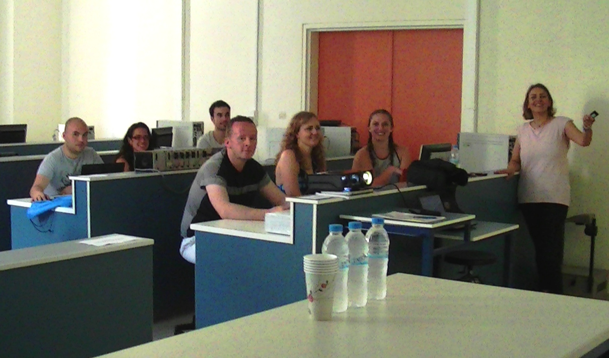 |
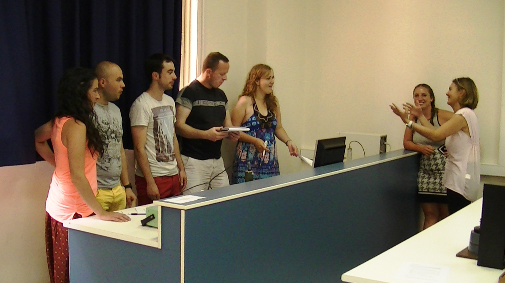 |
| 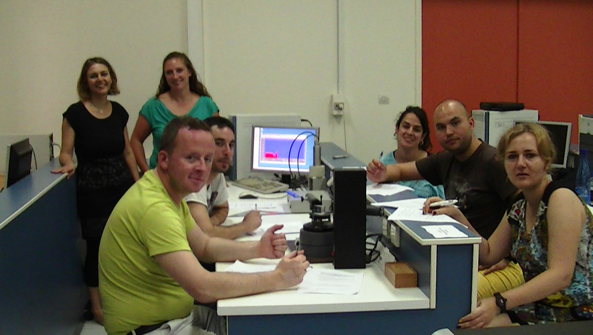 |
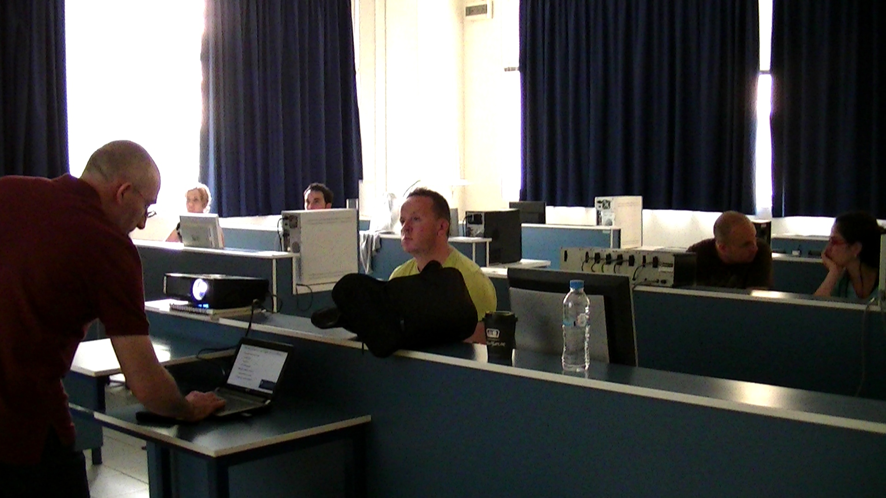 |
Industrial training for RADDEL fellows, 24-27th March 2014 (Saclay, Paris)
- Created on 08 April 2014
Last month, an industrial training programme for all RADDEL recruited fellows took place at the industrial partner IBA's headquarters in Saclay (Paris). During the 3-day programme, the fellows had the opportunity to receive lectures in industrial production of radiopharmaceuticals, clinical development, registration procedures or marketing and promotional material. They also visited the production and quality control facilities. This industrial training is part of RADDEL training programme for the fellows, that it is designed to provide them with a multidisciplinary approach and to enhance their potential and prospects for a future career in the industry.


CLINAM 7th Conference and Exhibition (June 23-25 2014, Basel-Switzerland)
- Created on 24 March 2014
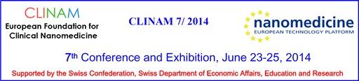
The 7th Conference and Exhibition for the European Foundation for Clinical Medicine (CLINAM) is taking place in Basel (Switzerland) between the 23rd and 25th of June 2014. This European summit for Clinical Nanomedicine and Targeted Medicine is being organised along with the European Society for Nanomedicine and the European Technology Platform on Nanomedicine (ETPN). Prof. Kostas Kostarelos (scientist-in-charge for RADDEL partner UNIMAN) is one of the members of the advisory board of the European Foundation for Nanomedicine.
RADDEL is not involved in the organisation of this conference but it is part of the RADDEL external training programme so it is opened to RADDEL fellows to attend it.
The pre-final programme can be found here

Workshop on Materials Characterization Techniques for XRD and XRF (ICMAB, 19th May 2014)
- Created on 04 February 2014
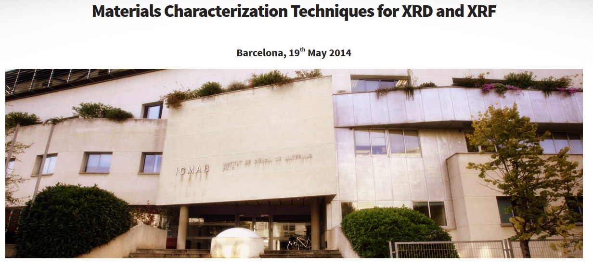
As part of RADDEL training programme activities, a workshop in materials characterization techniques will be held at ICMAB-CSIC on 19th May 2014:
http://congresses.icmab.es/mct2014/
The workshop includes the contribution of members of ICMAB-CSIC, ITJA-CSIC, ALBA, ICN2 and of industrial partners PARALAB and RIGAKU. The workshop will deal with X-ray diffraction (XRD) and X-ray Fluorescence (XRD), two available techniques for the characterization of materials.
Programme:
09:00 Registration
09:30 Presentation of the seminar
09:45 Prof. Jordi Rius (ICMAB-CSIC): "Brief introduction to lab XRD and description of the new software for structure solution and refinement of polycrystalline materials downloadable from ICMAB webpage"
10:10 Dr. Carlos Frontera (ICMAB-CSIC): "Structure refinement of thin films using lab equipment"
10:30 Dr. Raine Pulkkinen (Sales manager of RIGAKU): "New diffraction equipment and last generation of detectors"
11:15 Coffee break
11:30 Dr. Ignasi Queralt (ITJA-CSIC): "General introduction to X-ray Fluorescence spectroscopy (XRF). Its application to materials characterization"
12:15 Dr. Pol de Pape (Rigaku Europe): "Various types of XRF spectrometers"
13:00 Short communications
Prof. Elies Molins (Director of crystallography department, ICMAB-CSIC): "Single crystal diffraction and electron density studies"
Dr. Oriol Vallcorba (ALBA): "New structure solution possibilities of organic compounds from laboratory powder diffraction data"
Lcda. Anna Crespi (ICMAB-CSIC) "New XRD applications in transmission mode at ICMAB-CSIC"
The workshop is free to attend but registration is compulsory:

Second RADDEL Workshop on Complementary Training and Hands-on-school in Spectroscopy applied to materials science (22-24 January 2014, Prague)
- Created on 17 January 2014
Next week, two activities from RADDEL training program will take place in Prague (Czech Republic). On Wednesday 22nd, the Second RADDEL Workshop on Complimentary Training will be held at the seminar room of the J. Heyrovsky Institute of Physical Chemistry (HIPC), one of the RADDEL partners. The workshop, titled "Scientific Writing", is designed to provide RADDEL fellows, PhD students and other novice scientists with an opportunity to take their scientific writing skills in English to a higher level. As all other workshops organised by the network so far, it is open to everybody, although registration is compulsory (more information on the flyer).
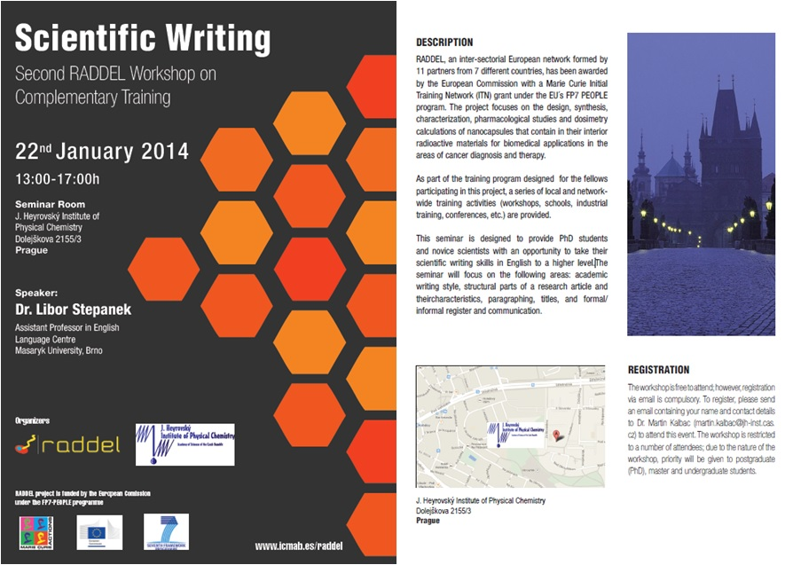
On Thursday 23rd - Friday 24th, the first RADDEL Hands-on-school ins Spectrocopy will also take place at the J. Heyrovsky Institute of Physical Chemistry. The school will focus on the characterisation of nanomaterials by spectroscopic and spectroelectrochemical techniques, which are very important to monitor purity, filling, functionalisation and electronic properties of CNTs. The school is organised by local partner Dr. Martin Kalbac who will be supported by Dr. Otakar Frank and RADDEL fellow Ana Santidrián. 3 other RADDEL fellows and 2 PhD students from RADDEL partner ICMAB-CSIC will attend this school.
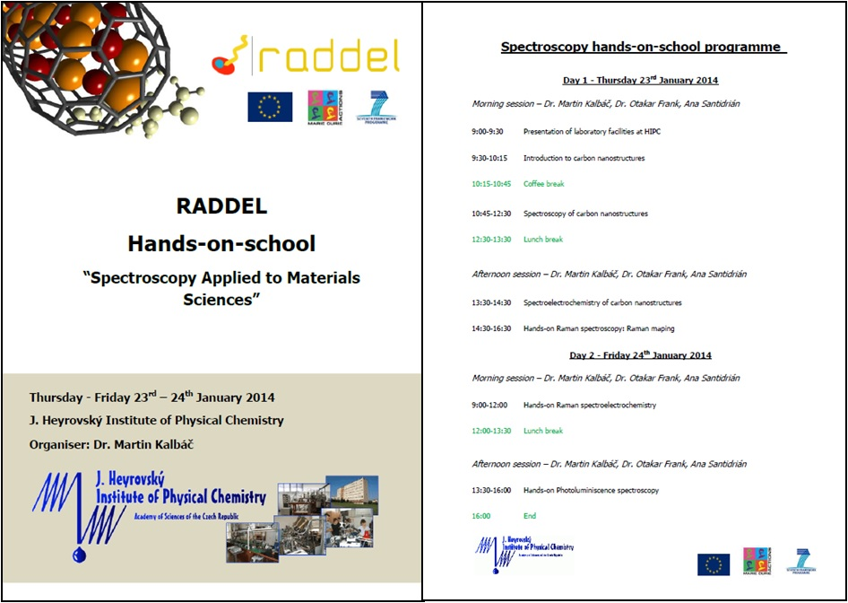
Workshop on Complex Materials: Magnetic and Electric Characterization at Low Temperatures (ICMAB-CSIC, 25th November 2013)
- Created on 28 October 2013
A workshop on electric and magnetic characterization techniques will be held on the 25th of November at ICMAB-CSIC. The aim of this workshop is to provide an overview on the conventional and most recently developed characterization techniques for magnetic, superconducting, dielectric and ferroelectric materials at low temperatures, with special emphasis on thin films and nanoparticles, topics of potential interest for the research community.
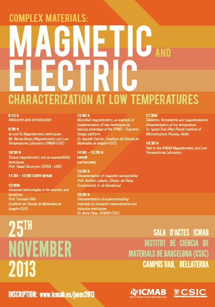
For more information, please visit the workshop webpage:
http://congresses.icmab.es/jmec2013/index.html
This workshop is part of the RADDEL training programme and therefore all the fellows are invited to attend it.
NanoMedicine School 2013; a total success
- Created on 01 October 2013

The Nanomedicine School that took place last month in Trieste (Italy) as part of the RADDEL training program was a total success, with more than 100 attendees and a dedicated poster session with 37 posters presented. The scientific program covered a wide range of topics within the nanomedicine field including carbon nanomaterials, nanoparticles, polymeric systems for drug delivery and sensors. The quality of the presentations was extremely high and the organisation of the school was perfect. We would like to take this opportunity to thank all the attendees and the organising committee.
A special acknowledgement to the people at University Degli Studi di Trieste (UNITS) for dedicating so much effort in the preparation of the school, including Prof. Maurizio Prato, Dr. Tatiana Da Ros and the two RADDEL felllows Agnieszka Gajewska and Dr. Jose Miguel González who also contributed to the organisation of this school.
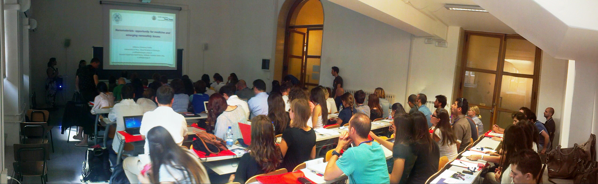 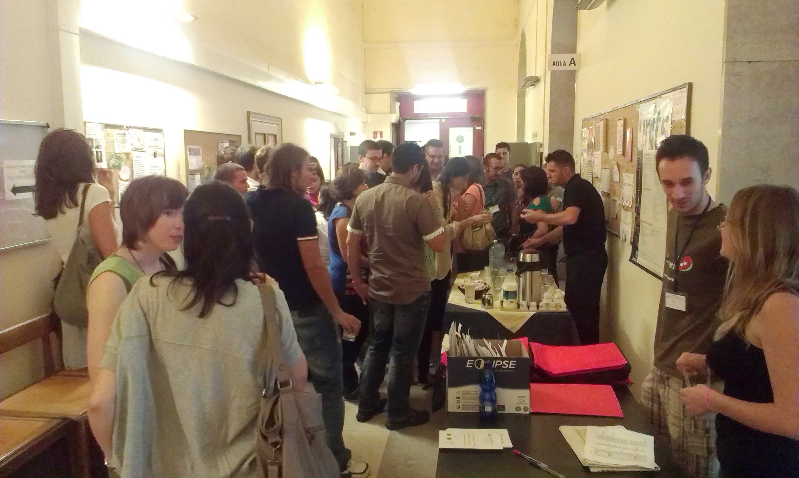 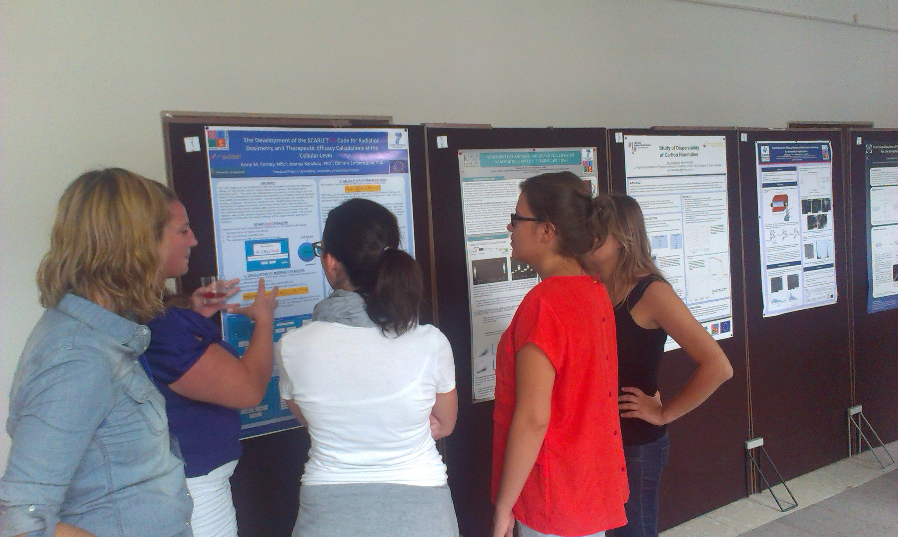 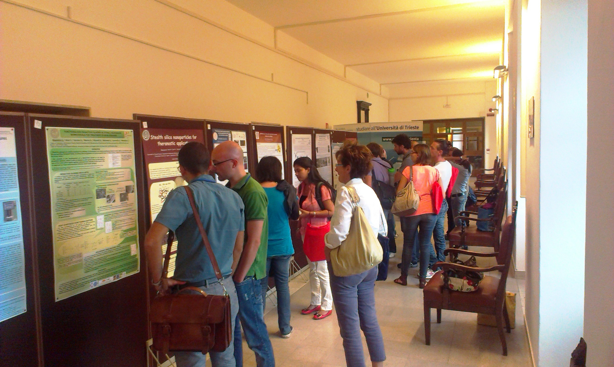
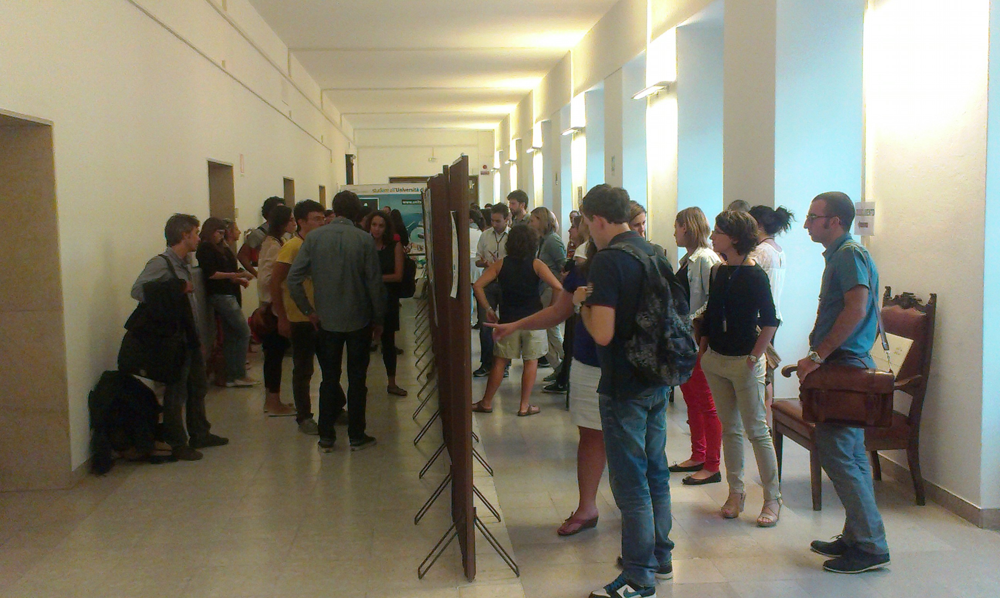
Hands-on-school on Pharmacological studies (London, 26-28th February 2013)
- Created on 20 March 2013
A Hands-on-school on Pharmacological studies took place in London on the 25-26th February 2013. The school, organised by the RADDEL partner KCL, was designed to give the fellows some insights for in-vitro cell culture techniques and in-vivo procedures.
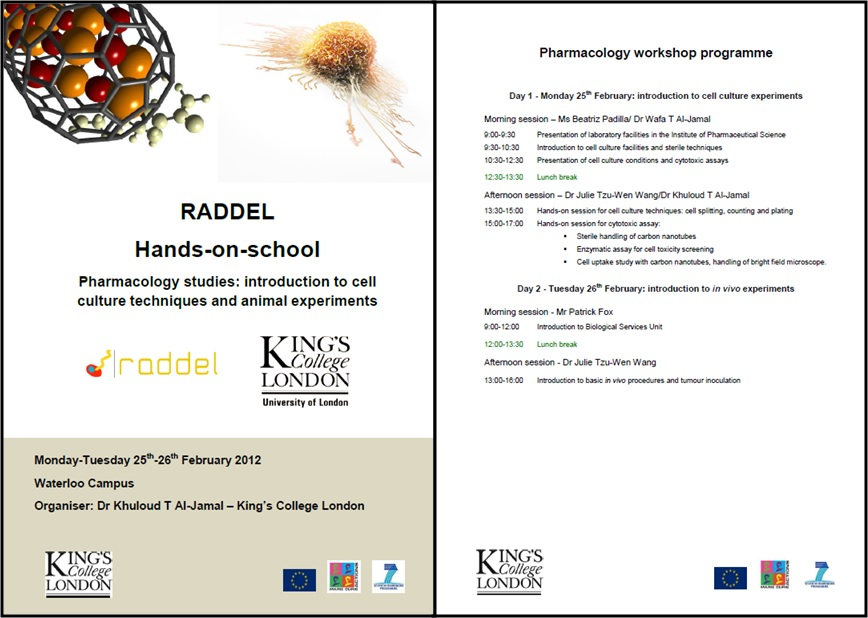
5 RADDEL ESR fellows attended this school, along with 3 KCL researchers. During this hands-on-school they all had the opportunity to learn about the interactions of nanomaterials with cells and tissues, and also to perform some basic cell culture techniques.
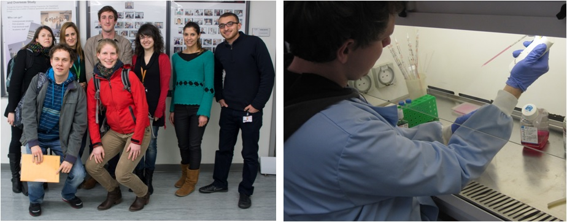
Left:Attendants to the 1st RADDEL Hands-on-school on Pharmacological studies; back row (from left to right): Sonia De Munari (ESR fellow, UOX), Rebeca Klippstein (ESR fellow, KCL), Maxime Bourgognon (ESR fellow, KCL), Noelia Rubio (research associate, KCL), Sara Pereira (visiting researcher, University of Lisbon), Hatem Hassan (PhD student, KCL); front row: Markus Martincic (ESR fellow, ICMAB-CSIC), Reida Rutte (ESR fellow, UOX).
Right: A RADDEL ESR fellow performing some basic cell culture techniques.
Workshop "Development and Marketing of Radiopharmaceuticals at an Industrial Level" 07/02/2013 (Strasbourg, France)
- Created on 25 January 2013
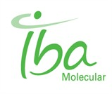
The workshop "Development and marketing of radiopharmaceuticals at an industrial level" for RADDEL fellows took place on the 7th of February 2013 at the Institut de Biologie Moleculaire et Cellularie in Strasbourg (France). The workshop, imparted by Dr. Jean-Claude Saccavini (Head of Strategic Marketing and Project Management at IBA Molecular) focused on the most important aspects to take into account for the development of radiopharmaceuticals and the regulations to reach the market. A total of 21 people participated in this workshop, including 10 ESR fellows and 7 people external to RADDEL.
Participants in the workshop learned about the following topics:
- Radionuclide manufacturing and labeling
- Scaling-up and industralisation of radiopharmaceuticals
- Nuclear safety and regulatory constraints
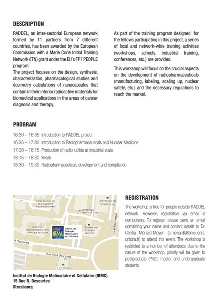
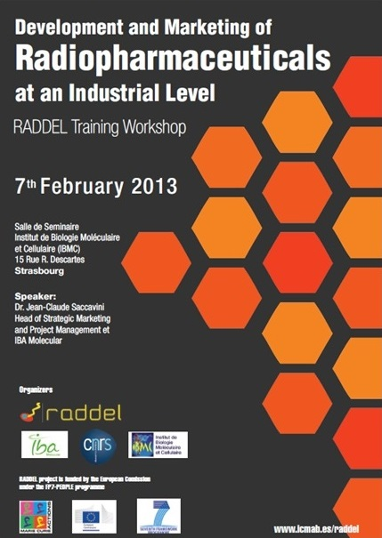
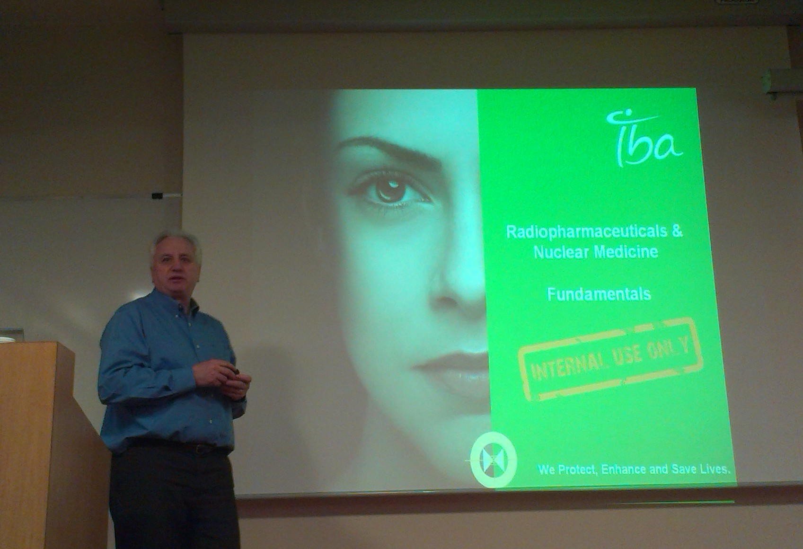
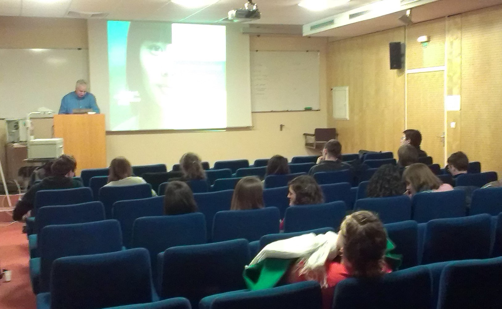
More workshops are planned for RADDEL during 2013, please visit the project's webpage for the latest information about the project, future activities and open positions.
More Articles...
- First RADDEL Workshop on Complimentary Training: "R&D Project Management and Technology Transfer: from Research to the Market" (10/10/2012)
- TRAIN2 Workshop on Nanometrology 2012, Bellaterra (Barcelona), May 3-4 2012
- Workshop "Carbon Nanocapsules and their Characterization by Thermal Analysis and Electron Microscopy" (ICMAB-CSIC; 29-06-2012)